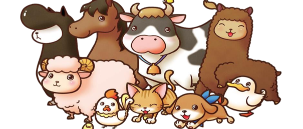

| 🐾 Mascotas 🐾 Animales de granja 🐾 Servicios del campo 🐾 Material de Apoyo |
VISIÓN
|
Ser una plataforma líder en Colombia en el ámbito del cuidado y bienestar animal. Nos dedicamos a empoderar a los campesinos mediante la entrega de conocimientos prácticos, fomentando la colaboración entre comunidades y promoviendo un trato ético y responsable hacia los animales. ⭐ Objetivos de Comprensión: 1. Liderazgo en Cuidado Animal: Nos esforzamos por ser reconocidos como la principal referencia en Colombia en el campo del cuidado animal, estableciendo estándares elevados en todas nuestras actividades.2. Empoderamiento de Campesinos: Capacitamos a los campesinos con conocimientos prácticos y herramientas necesarias para mejorar el bienestar animal en sus comunidades, promoviendo así su autonomía y desarrollo sostenible. 3. Colaboración Comunitaria: Fomentamos la colaboración entre diversos actores, incluyendo comunidades locales, organizaciones gubernamentales y no gubernamentales, para fortalecer la red de apoyo al bienestar animal. 4. Promoción de Trato Ético y Responsable: Educamos sobre la importancia de un trato ético y responsable hacia los animales, promoviendo prácticas que aseguren su dignidad y cuidado adecuado en todas las circunstancias.
|